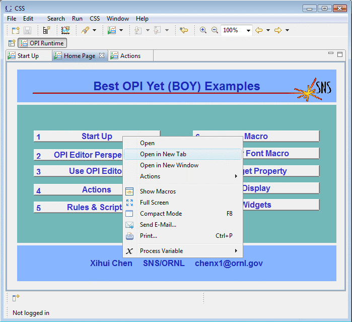

"Top OPIs" button in toolbar, in this example offering "main.opi" and other display files
OPI Runtime is responsible for executing and managing OPI files.

By default, you can run an .opi file by double-clicking it in the Navigator. If it's not opened in runtime, you can still open an .opi file with OPI Runtime by right clicking the file and choose Open With->OPI Runtime.
When you startup css from command line, you can specify the OPI files you want to run and their macros input:
css --launcher.openFile "<path_to_opi>/file1.opi macro1=value1, macro2=value2" "<path_to_opi2>/file2.opi"
For more details: see Input macros from command line.
There is a Top OPIs drop-down button on toolbar, on which you can define which OPIs to open from preference page. This is very useful for a site if you have
a "map" opi. In BOY, you can use URL path at everywhere if a path is needed. For example, if you set
a URL path http://www.xxx.com/main.opi for the top OPIs in preference page, you will be able
to run this OPI directly from Top OPIs button.
OPI Runtime works like a modern web browser. It arrange OPIs in Tabs by default.
Each tab can be rearranged by dragging it to a new place or new window.
By default, Open OPI action will replace the current OPI with the new OPI.
But Ctrl-Cliking a widget with Open OPI action attached will open the OPI in a new Tab.
Or in a new window by Shift-Cliking
If the current OPI is replace with new OPI, you can still go back or go forward from Navigation buttons on toolbar.
OPI can also be opened in a View or a detached View (which looks like a standalone OPI window). See Actions.
In contrast to standalone control system display managers, BOY is integrated in CSS, meaning: You can open a context menu on any widget in a BOY display and send the PV that is displayed by the widget to other CSS tools. For example, you can send the PV to the Data Browser to see a strip-chart of the PV's value over time.
If you have Elog or Email plugin installed, you will be able to send the OPI screen shot to Elog or an Email address.
Compact Mode will have menu bar and toolbar hidden. You can always exit compact mode by selecting "Exit Compact Mode". Similar to Full Screen Mode.
You can zoom in/out from toolbar or by Ctrl-Scrolling.